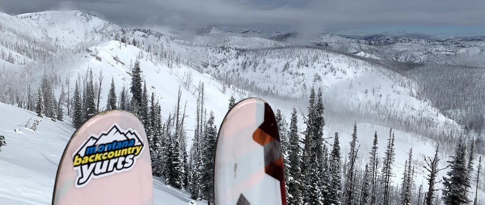
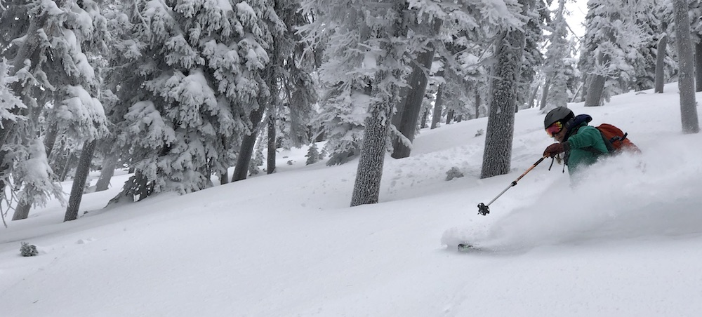

Frequently Asked Questions
Where are the yurts located?
The yurts sit nestled high in the Southern Swan Mountains of Montana, in between the Mission Mountains and the Bob Marshall Wilderness. They are situated deep in the Montana backcountry, approximately eleven miles via snowmachine or eight miles skinning from the trailhead. The trailhead is approximately an hour from Missoula and 90 minutes from Helena.
The trailhead is located on Cottonwood Lakes road at the winter plowing boundary just past Rich's Montana Guest Ranch. The trailhead has limited parking so please consider carpooling.
See our maps page for more information.
What is the difference between the Lupine Yurt and the Alpine Yurt?
About two hundred vertical feet and ¾ mile separate the two yurts. Both yurts are similarly equipped. The Lupine maybe better suited for skiing off the Lookout/ Supernatural Area of the horseshoe where as the Alpine is slightly better situated for skiing the back bowls. The Alpine Yurt is slightly larger and can more easily accommodate bigger groups.
What is the elevation of the yurts?
The Alpine Yurt sits at approximately 6800’ and the Lupine yurt sits at approximately 6600’
How much snow do the yurts receive each season?
The Seeley-Swan area of Montana is known for its colder weather and heavier snow falls. This translates to incredible cold smoke powder skiing. On April 1st of 2009, we had almost 14 feet of snow pack, not fall at the Alpine Yurt. The average seems to be around 10 feet. Storms dumping multiple feet of snow are not uncommon.
What is a gear haul?
Take the weight off your back and off your mind. YurtSki will haul your group’s gear to the door of the yurt. Gear haul costs $350 per 6 people, each way.
The trip into Yurt Ski is 11 miles on the road, or 8 miles if you cut the switchback and climb with skins. A gear haul in makes the most of your trip by getting you and your stuff into the yurts so you can ski and enjoy! We will also make sure to point out the freshwater spring, start you off with a full supply of water, and make sure the firewood is stocked and ready.
Can we use our own snowmobiles and gear sleds to access the yurts?
Yes! We offer gear hauls as an add-on, but it is not required, and many groups like to do this on their own! Just know that sometimes it can be an "adventurous day" depending on what mother nature throws at you and your crew.
Why are there daily minimums?
The minimum allows us to ensure exclusivity to your group while staying at the yurts. We have different minimums for each yurt to accommodate different group sizes. Minimums are in dollars, not people. For example, groups of 2 or 3 are more than welcome to rent out the Lupine Yurt on a weekend night, they will just be paying the price of a 4 person group. Additionally, due to the terrain at the yurts, we require all parties to be at least 2 people for avalanche safety.
How many people can stay in the yurts?
Both yurts have 2 full-size bunk beds allowing for individual sleeping for 4 people or 8 if sharing the full-size mattresses. Additionally, the slightly larger Alpine Yurt has 2 futon couches that can be converted into beds.
What type of terrain is in the area?
The immediate Yurtski terrain consists of a horseshoe shaped ridge that is separated into three main bowls by short finger ramps. The skiing in these areas ranges from steep cliff sections and chutes to mellow burnt tree runs which funnel back towards the yurts. There is also ample opportunity to tour the ridge and drop off the backside towards the Bob Marshall & Scapegoat Wilderness. Longer tours may decide to drop off the backside to a lake for lunch and laps.
How do I book a trip?
View the availability calendar here! Check both the Alpine and Lupine availability and grab the weekend you want! Always feel free to call or email us and we can help you with your booking! Upon completion of your reservation, We'll email you all the details you need to know for your upcoming trip.
Do we need to have avalanche equipment even if we’re not skiing?
Yes. A beacon, shovel and probe are mandatory for anyone visiting the yurts. The Swan Mountains are avalanche country and we must be prepared at all times. Avalanches can and do occur in the area.
What time is check-in/checkout?
12pm. Please ensure that the yurt is cleaned, you have disinfected all surfaces, and your stuff is out by noon. If you're headed skiing before heading back to your car (you should!), please stash your gear outside and out of the way of any incoming guests who may arrive while you're getting those last minute turns.
Are cross-country skis or snowshoes okay?
Cross-country skis are not recommended. There is A LOT of snow. Snowshoes seem to work for some snowboarders, but we do recommend split-boarding over snowshoe approaches for our snowboarding friends.
What do you do for water?
We utilize a mountain spring for drinking water. Drinking water can be retrieved on the way into the yurts. With gear hauls, we will gather at least 5 gallons of water for your group. If not using gear haul, water jugs are recommended, as is a hatchet to break the ice that forms over the spring. We drink from the spring untreated; however this decision is ultimately yours. Boiling or treating water with iodine are good options. Otherwise, culinary/ washing water is gained from melting snow.
How do you heat the yurts?
The yurts are heated by wood burning stoves and all firewood is provided. Inside the yurts there are wood bunks full of dry, split wood. Outside the yurts there are woodpiles where rounds can be found for splitting.
What do I need to bring?
Click here to see our suggested packing list.
Can I bring my dog?
No. We ask you to please leave your four-legged friends at home when going to YurtSki. We are concerned about sanitation of the yurts. Also, the long snowmobile approach is extremely hard on dogs. We highly recommend SkyHi Kennel if you'd like to board the pup while you're out skiing, it's where we send our furry friends.
Where can I rent backcountry skiing equipment in Missoula or Bozeman?
Missoula: MT Ski Tech: Skis, boots, beacon, shovel, and probe @ $229 for a four day trip when you mention YurtSki.
Last Best Ski & Paddle has Black Crow AT skis or Weston Splitboards with Spark bindings (beacons, shovels, probes also available)
Bozeman: Uphill Pursuits can put together a backcountry ski or snowboard set up for your trip.
What is supplied at the yurts?
Yurtski provides a wood burning stove, firewood, ax, maul ax/splitting tool, cook stove, propane, lantern, white gas, pots, pans, plates, bowls, cups, cooking and eating utensils, kettle, snow melt pots, at least 5 gallons of spring water for drinking (only if a gear haul is elected), sleeping mattresses/pads/cot/futon. The Alpine Yurt features 2 futon couches and also houses a Life flight extraction kit (helicopter specific backboard, splints, neck braces, emergency blanket, six man carry, basic first aid). But above all, super terrain!
Click here for a complete inventory of what is at the yurts
Is there an outhouse?
There is a three sided outhouse located directly behind each yurt in order to answer nature’s call in relative comfort.
Where is the closest place to stay before my trip?
While there are plenty of lodging options in Helena or Missoula, Rich's Montana Guest Ranch offers cabin rooms for rent. They are located a quarter-mile from the trailhead and their winter rates are:
| Small Cabin Room |
1 King Bed |
$125 per night (plus tax) |
Large Cabin Room |
2 Queen Beds |
$150 per night (plus tax) |
What about the burn?
The summer 2017 forest fires opened up terrain never really considered before! There are now incredible open tree runs right out the front door of the yurt down into the gulley. If you liked skiing the classic "burnt trees" before, you're in for a treat!
What is the Cancellation Policy?
Montana Backcountry Yurts requires a 50% nonrefundable deposit at the time of booking. You can choose to use the "Pay Now" in your invoice to pay the remaining 50% any time before your trip. We will charge any outstanding balance to your credit card 30 days prior to your trip. If booking less than 30 days in advance, we require you to pay in full.
You can cancel your trip up to 30 days prior to your start date online at yurtski.checkfront.com, by email: info@montanabackcountryyurts.com, or by phone: (406) 848-4232. Your deposit will not be refunded, but we will not charge you the remaining balance.
Trips canceled less than 1 month prior to the start date are still required to be paid in full and are nonrefundable.

Powder in the North Bowl Trees